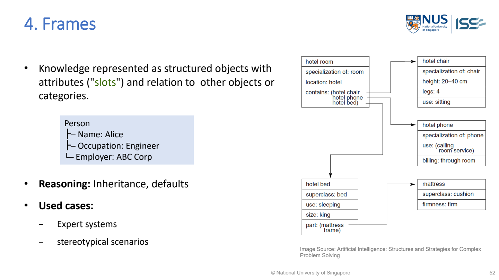

Frames（框架）
A frame stores a structured object or situation as named slots（欄位） and their fillers（值）. Know how to write the record, share slots through inheritance, and distinguish a default from a known fact.

MR-Day 2_JR_v1.pdf · PDF p.51 / printed slide 52
Write the lecturer’s frame format
Person ├─ Name: Alice ├─ Occupation: Engineer └─ Employer: ABC Corp
| Part | Meaning | Here |
|---|---|---|
| Frame | Structured description of an object/concept. | Person |
| Slot | Named property to store. | Name, Occupation, Employer |
| Filler/value | Content of a slot. | Alice, Engineer, ABC Corp |
| Relationship | Connection to another object/category. | For example, a parent-frame link when supplied. |
Defaults and unknown slots: the lecture comparison
Frame: Bird Covering: Feathers Locomotion: Fly (default) Diet: ?
- Default（預設值）: Fly is a usual value, not a guarantee for every specific bird. A more specific value can override it.
- ? means unknown: the diet has not been supplied. It does not mean no diet.
- Inheritance（繼承）: a child frame receives shared parent slots and can add its own slots or override a default. Do not confuse a subtype link with a part-of link.
MR-Day 2_JR_v1.pdf · PDF p.53 / printed slide 54, Frames column.
5001 sample Q1(c): draw a frame schema
The question explicitly asks for business objects, relationships, qualitative slots and inherited shared properties. This belongs under Frames.
BodyPart [name, position, time_recorded] ├─ Face [distance_to_monitor, distance_status] └─ Eye [eye_position] Equipment [name, position] └─ Monitor [brightness, contrast, height_status] Environment [ambient_light, glare_level] Face ─distance_to→ Monitor Eye ─position_relative_to→ Monitor
Proposed study schema: the case supplies the scenario; the exact frame names/field arrangement above are a possible answer from the revision discussion, not a verbatim lecture diagram or official key.
- Choose objects named or justified by the case.
- Write their slots and suitable values/types.
- Put common properties in a parent frame.
- Add the required qualitative states, such as too-close / acceptable / too-far, with reference ranges where supplied.
- Label relationships: Eye is-a BodyPart, but Eye part-of Face. These are different links.
If asked how the system uses the frames, state the checking/matching procedure. A stored record alone does not perform reasoning. Internal diagnosis architecture is a separate question: see the architecture concept.
Before finishing your drawing
- Every frame has meaningful slots, not only a name.
- Shared slots are inherited; case-specific values stay specific.
- Unknown, false and default are not the same.
- Do not copy all properties of a general category into a current case as observations.
Sources: MR-Day 2_JR_v1.pdf · PDF pp.51, 53; original 5001 sample Q1(c), PDF pp.4–5; 5001_SAMPLE_QA.md for the labelled proposed schema.
Used Cases:
The use-case names come from the lecture. The short scenarios below explain how to recognize them in an exam; they are teaching examples, not quoted exam questions.
| Lecture use case | What it means | Example / clue in a question |
|---|---|---|
| Expert systems（專家系統） | Frames organize structured knowledge the reasoning process can use. | An equipment adviser stores a Device frame with model, symptoms and status slots; rules can inspect those slots. |
| Stereotypical scenarios（典型情境） | A familiar situation with a usual structure and expected roles/properties. “Stereotypical” here means a typical pattern, not prejudice about people. | A hotel-room frame can contain room number, bed count and bathroom availability, with typical defaults. Fill in the actual room’s values; a stated exception overrides a default. |
Choose by the required job: explain what knowledge is stored and how this representation helps with the scenario. A use-case name alone is not a sufficient reason.
MR-Day 2_JR_v1.pdf · PDF p.51 / printed slide 52.
Exam clue: a familiar situation described through usual roles, attributes and expected values → consider Frames. Check actual values and exceptions; do not assume every typical detail is guaranteed.